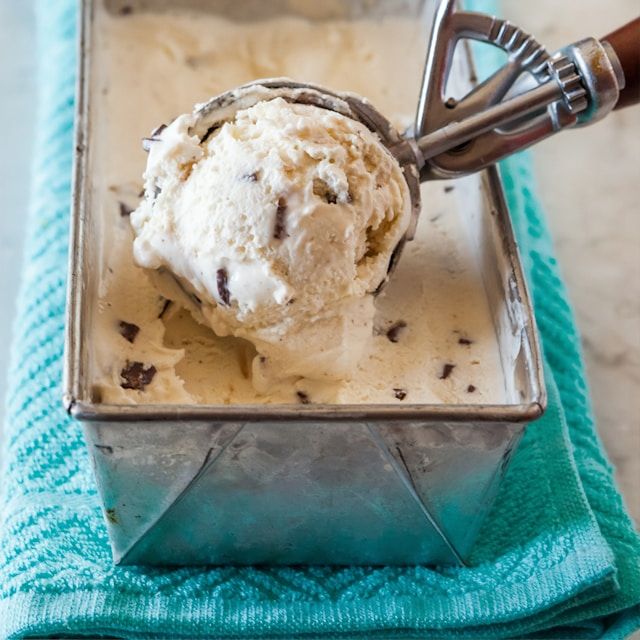

Homemade Ice Cream

Quick and Easy Ice Cream
This ice cream is an easy sweet dessert to make for the whole family! Only 5 simple ingredients for this awesome frozen treat. Perfect for adding in toppings of your choice!
Ingredients
- 2 quarts half-and-half
- 1 ½ cups white sugar
- ½ pint heavy cream
- 4 teaspoons vanilla extract
- 1 pinch salt or to taste
Steps
- Gather all ingredients
- Combine half-and-half, sugar, cream, vanilla, and salt in the freezer container of an ice cream maker
- Freeze according to the manufacturer's instructions, about 20 minutes
- Transfer to an airtight container and freeze until firm, about 4 hours
- Enjoy!
Home